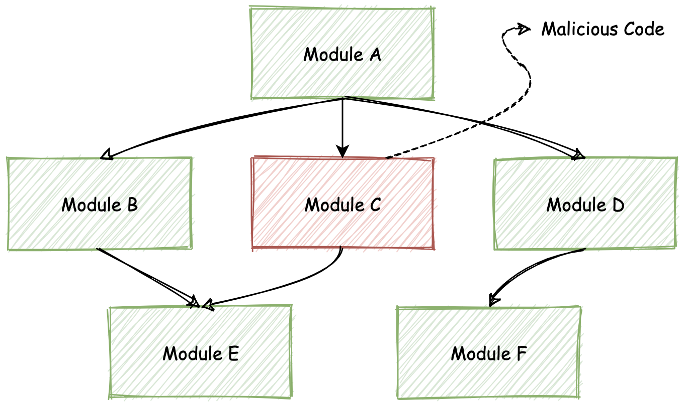
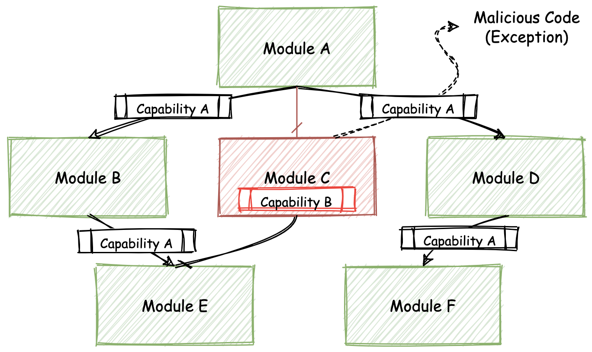
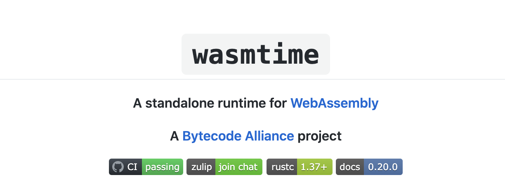
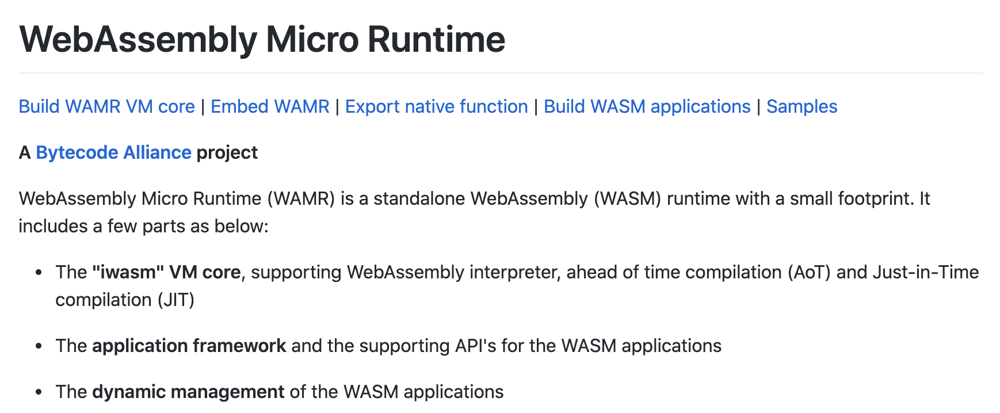
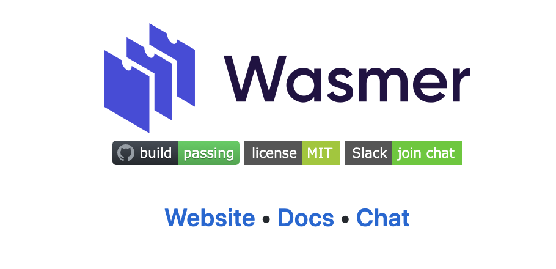
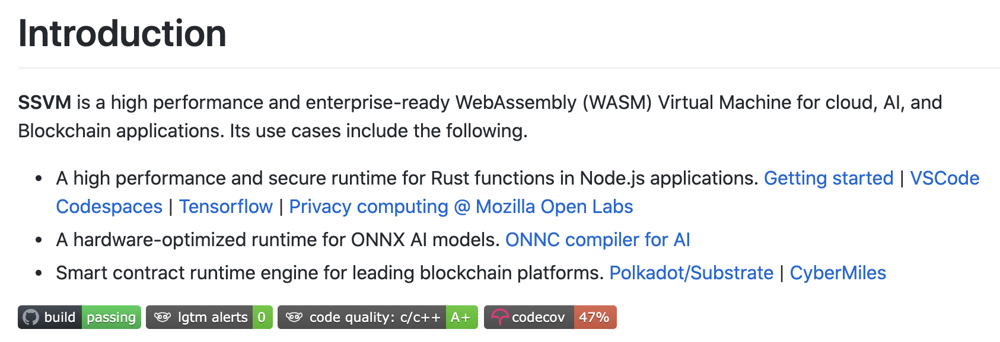

- 00 开篇词 我们为什么要了解 WebAssembly？.md.html
- 01 基础篇：学习此课程你需要了解哪些基础知识？.md.html
- 02 历史篇：为什么会有 WebAssembly 这样一门技术？.md.html
- 03 WebAssembly 是一门新的编程语言吗？.md.html
- 04 WebAssembly 模块的基本组成结构到底有多简单？.md.html
- 05 二进制编码：WebAssembly 微观世界的基本数据规则是什么？.md.html
- 06 WAT：如何让一个 WebAssembly 二进制模块的内容易于解读？.md.html
- 07 WASI：你听说过 WebAssembly 操作系统接口吗？.md.html
- 08 API：在 WebAssembly MVP 标准下你能做到哪些事？.md.html
- 09 WebAssembly 能够为 Web 前端框架赋能吗？.md.html
- 10 有哪些已经投入生产的 WebAssembly 真实案例？.md.html
- 11 WebAssembly 在物联网、多媒体与云技术方面有哪些创新实践？.md.html
- 12 有哪些优秀的 WebAssembly 编译器与运行时？.md.html
- 13 LLVM：如何将自定义的语言编译到 WebAssembly？.md.html
- 14 有哪些正在行进中的 WebAssembly Post-MVP 提案？.md.html
- 15 如何实现一个 WebAssembly 在线多媒体处理应用（一）？.md.html
- 16 如何实现一个 WebAssembly 在线多媒体处理应用（二）？.md.html
- 17 如何实现一个 WebAssembly 在线多媒体处理应用（三）？.md.html
- 18 如何进行 Wasm 应用的调试与分析？.md.html
- 19 如何应用 WASI 及其相关生态？.md.html
- 20 总结与答疑.md.html
- 结束语 WebAssembly，未来已来.md.html
- 捐赠
12 有哪些优秀的 WebAssembly 编译器与运行时？
你好，我是于航。
本节课我们来一起看看，目前业界有哪些优秀的 Wasm 运行时。这些运行时都是 Wasm 可以在 out-of-web 领域大显身手的最基本保障。它们其中有些支持 WASI 抽象系统接口，有些支持 Wasm Post-MVP 标准中的部分提案，还有一些可以被专门用在诸如嵌入式、IOT 物联网以及甚至云，AI 和区块链等特殊的领域和场景中。
不仅如此，还有一些更具创新性的尝试，比如 “Wasm 包管理”。这一概念类比 npm 之于 JavaScript，PyPi 之于 Python，crates.io 之于 Rust，相信这一定可以为 Wasm 生态添砖加瓦。
这一切，我们都要先从“字节码联盟”这个特殊的组织开始说起。
字节码联盟（Bytecode Alliance）
“字节码联盟”成立于2019年末，是一个由个人和公司组成的团体。最初的一批创始成员为 Mozilla、Fastly、Intel 以及 Red Hat。联盟旨在通过协作的方式，来共同实现 Wasm 及 WASI 相关标准，并通过提出新标准的方式来共同打造 Wasm 在浏览器之外的未来。
对于开发者来说，联盟希望能够为开发者提供健全的、基于各类安全策略构建的成熟开发工具链（虚拟机、编译器以及底层库）生态。这样开发者便可以将目光更多地专注于应用本身的设计与研发上，同时可以在各类环境中，快速地构建可运行在浏览器之外的 Wasm 应用，并且不用考虑安全性等基本问题。
背景 —— 问题所在
回顾 20 年前，各大互联网公司在软件开发的过程中，对于跨应用的代码复用能力是非常弱的。但 20 年之后，诸如 NPM、PyPi 等代码包管理平台，让我们不再需要从头到尾完全“独立”地开发一个完整应用。
模块化的软件开发模式，让我们可以大量重用社区中现存的、已经十分成熟的第三方代码库。但在方便地利用这些代码库的同时，我们也不得不面对的另外一个问题，那就是随着第三方代码而来的代码安全性问题。
一个应用在运行时会依赖第三方代码库所提供的功能，因此在基于传统软件的开发模式中（譬如 Node.js 应用），第三方代码同样共享着应用程序所拥有的各类系统接口权限（如 Socket 网络通信、File 文件系统等），以及资源访问（内存、硬盘等）权限。
不仅如此，如下图所示，由于模块化的开发方式，使得代码的整体依赖成为了树状关系，因此整颗依赖树上的所有模块代码，都会共享同样的代码权限。这种共享无疑大大降低了应用整体的安全性，给第三方代码中所可能包含的恶意代码或漏洞以可乘之机。

通过对一个真实的，第三方模块恶意代码窃取用户数字货币的案例进行总结，我们可以发现攻击者通常会按照以下时间顺序（仅选择了关键节点）来对终端用户逐步发起攻击。
- 第 0 天：攻击者创建了一个模块
- 第 2 天：攻击者将该模块作为可复用的第三方底层依赖库
- 第 17 天：攻击者为模块添加恶意代码
- 第 42-66 天：目标应用通过依赖升级而引入了恶意代码
- 第 90 天：攻击被用户察觉
通常来说，以上述案例为例，恶意代码需要同时具备以下两类权限才能够对终端用户成功地发起攻击：
- 操作系统资源的访问权限。包括用于存放诸如“秘钥”等敏感数据的内存资源、用于发送窃取数据的 Socket 资源等；
- 操作系统接口的调用权限。包括对文件资源的读写权限，以及 Socket 的操作权限。
据 GitHub 官方调查统计，自 2017 年到 2019 年，NPM 上包含有恶意代码的模块数量逐年增加，并且攻击者的恶意代码攻击目标逐渐向具体的某类终端用户聚焦。攻击实施者更加具有耐心，企图进行可以暗中实施的、经过精心策划的攻击。
先抛开经由第三方模块主动发起的恶意代码攻击不谈，应用自有的代码漏洞也同样为攻击者提供了可乘之机，比如“经典”的 ZipSlip 任意文件覆盖漏洞。
ZipSlip 没有对解压缩文件时的目标地址进行校验，而是直接进行拼接。因此当遇到包含有恶意代码文件的压缩包时，这些文件便可经由此漏洞被解压到整个文件系统的任意位置。当然前提是应用的运行者拥有这些文件目录的写权限。
而在 NPM 中，具有类似漏洞的第三方代码库只有 59% 被修复。另外有超过 40% 的代码库依赖于拥有至少包含一个已知漏洞的 NPM 第三方模块。从现实的情况来看，此类“恶意代码”或者“代码漏洞”问题无法被完全避免，因此我们需要考虑其他的方式来保证应用的运行时安全。
究其根源，发生类似的安全性问题其主要原因在于，恶意代码拥有了本不该拥有的系统资源和系统接口访问权限。我们不能够 100% 地相信代码本身的行为方式，能够完全满足我们对安全性的要求。但基于 Wasm，我们可以在一定程度上解决这个问题。
类比于操作系统上每个原生应用在运行时的独立进程，实际上，每一个 Wasm 模块在 out-of-web 环境中实例化运行时，也都有着自己独立的运行时沙盒环境，并且对应着独立的可用内存资源以及调用栈。但 Wasm 模块之间的隔离却不一定需要通过独立进程的方式来实现，因此从运行模型上来看，Wasm 的方式会更加轻量且高效。
不仅如此，正如我们在讲解 WASI 时所介绍的那样，与传统操作系统中的“进程”不同，每一个实例化的 Wasm 模块，都只能够在实例化时使用被主动分配的系统资源（内存）与接口能力（系统调用），因此对于模块实例所拥有权限的控制力度会更为细腻。
而且，相对于传统进程需要通过“序列化”与“反序列化”才能够在进程间传递信息（IPC）的方式不同，Wasm 实例之间的消息传递可以通过更加轻量的方式来完成。
解决方案 —— 纳米进程（Nano-Process）
根据上面讲过的 Wasm 在资源及权限控制上的相对优势，我们可以提出一种新的 Wasm 应用构建模式 —— “Wasm Nanoprocess”。
一般来说，一个完整的大型 Wasm 应用，可能会同时包含有多个相互依赖的底层 Wasm 模块。由于每一个模块实例都拥有着自己独立的数据资源及可用权限，因此我们可以称每一个实例化的模块为一个独立的 “nanoprocess”，翻译过来也就是“纳米进程”。
当一个含有恶意代码的 Wasm 模块被“链接”到整个应用的依赖树中时，应用各依赖模块所能够使用的资源及系统接口权限，便全部来自于最上层的调用者。也就是说需要在应用运行的入口模块中被指定，然后再由该模块向下层依赖模块进行分发。
当恶意模块的内部代码需要使用某种未经授权的额外资源或能力时，整个模块依赖树的 “Import Section” 签名便会发生错误，这个错误会在运行时向上层用户抛出对应异常，提示某个模块的某些特定资源或者权限没有被导入。在这种情况下，特殊的权限调用便会引起人们的注意。
即便恶意代码获得了特定操作系统接口的执行权限，但恶意代码想要从其他应用依赖模块的实例中，获取对应内存段中的敏感信息，也并非易事。
由于每个 Wasm 模块实例都拥有独立、隔离的线性内存段来存储数据，因此只有在模块主动向外部暴露（通过 “Export Section” ）特定数据，或者直接调用（动态链接）目标模块内的方法时，才能够将自身内存段中的数据传递过去。
如下图所示，通过限制恶意代码对数据以及系统接口权限的访问和使用，“Wasm Nanoprocess” 这种应用构建模式，可以在最大程度上保证 Wasm 应用及其所依赖第三方模块的运行时安全性。

虚拟机运行时
我们为了能够基于 “Nanoprocess” 模式来构建安全可靠的 Wasm 应用，一定少不了在 out-of-web 领域提供 Wasm 字节码解析和执行能力的基础设施。并且在一定程度上，我们还需要它们为我们提供的 WASI 系统接口的访问能力。
而“字节码联盟”便负责培养和发展这样一批，能够提供这些能力的优秀基础设施及相关组件。它们主要包括：Wasm 运行时（虚拟机）、Wasm 运行时组件（实现）以及 Wasm 语言相关的工具。
下面我便挑选其中一些具有代表性的运行时虚拟机，来给你进行介绍。当然，在字节码联盟之外，也有一批十分优秀的开源 Wasm 底层基础设施正在以惊人的速度蓬勃发展，这里我会同时选择一些有代表性的项目和你分享。
Wasmtime
Wamtime 是字节码联盟旗下的一个独立的 Wasm 运行时，它可以被独立作为 CLI 命令行工具进行使用，或者是被嵌入到其他的应用程序或系统中。Wamtime 具有很高的可配置性和可扩展性，因此可以被应用到很多的场景中，譬如 IoT 与云原生领域。
Wasmtime 基于优化的 Cranelift 引擎构建，因此它可以在运行时快速地生成高质量的机器码。Cranelift 是一个低层次的、可重定向的代码生成器。它可以将与目标无关的中间代码表示形式（IR）转换为可执行的机器代码。
除此之外，Wasmtime 还支持部分的 WASI 系统接口以及 Wasm Post-MVP 提案，以及对于诸如 C 和 Python 等语言的运行时绑定。这样你便可以在这些语言的代码中，直接使用 Wasmtime 所提供的能力。关于它的更多信息可以在这里查看。

WAMR
WAMR（WebAssembly Micro Runtime）同样是一款字节码联盟旗下的独立 Wasm 运行时，它基于 C 语言开发。不过相较于 Wasmtime，它更倾向于被应用在诸如 IoT、嵌入式芯片等对功耗和硬件资源要求较为严格的 Wasm 场景中。
WAMR 支持多种 Wasm 字节码的运行时“翻译”模式，比如 JIT 模式、AOT 模式以及解释器模式。其中在解释器模式下，整个运行时的大小仅有 85KB。在 AOT 模式下，仅有 50KB。不仅如此，它可以在将近 100 微秒的时间内启动应用，并在最小 100KB 的内存资源下，便可以启动一个 Wasm 实例。
WAMR 也同样支持 WASI 以及部分的 Wasm Post-MVP 提案。同时附带地，它还提供了一个用于快速构建 Wasm 应用的 WAMR 应用框架。关于它的更多信息可以在这里查看。

Wasmer
Wasmer 是另外一款独立于字节码联盟优秀的 Wasm 运行时。
不同于 Wasmtime 与 WAMR，Wasmer 基于 Rust 编写，它在支持 Wasm 核心标准、部分 WASI 系统接口以及部分 Wasm Post-MVP 标准的基础之上，还同时提供了对多达数十种编程语言的 Wasm 运行时绑定支持。这意味着，你可以在其他编程语言中使用 Wasmer 的能力来解析和执行 Wasm 字节码。
除此之外有一个很有趣的尝试， Wasmer 同时提供和维护 Wasm 包管理平台 —— Wapm。通过这个平台，你可以发布新的或直接使用已有的 Wasm 包。这些包都借助于 WASI 抽象操作系统接口，提供了与本地应用相同的系统资源访问能力。
关于它的更多信息可以查看这里。

SSVM
最后一个要介绍的 Wasm 运行时是 SSVM。它是一个专门针对云、AI 以及区块链应用程序设计的高性能、可扩展且经过硬件优化的 Wasm 虚拟机。
SSVM 的 Wasm 运行时针对 ONNX AI 模型进行了硬件优化。同时也可以作为区块链平台的智能合约运行时引擎。关于它的更多信息可以查看这里。

总结
好了，讲到这，今天的内容也就基本结束了。最后我来给你总结一下。
在本节课程中，我首先给你介绍了伴随 Wasm 发展而出现的一个新的组织 —— “字节码联盟”。字节码联盟由 Mozilla 等一批科技公司作为创始成员，通过协作的方式来共同打造 Wasm 在 out-of-web 领域的未来发展。
紧接着，我们讲解了字节码联盟出现的背景，也就是当前传统应用构建模式在安全性上的不足。基于 Wasm 与 WASI 的天然安全特性，我们可以按照 “Nanoprocess” 纳米进程模型，来构建更加安全的 Wasm 应用。字节码联盟出现的目的之一，便是为我们提供、培养一系列必备的底层基础设施与相关组件，这样我们可以在未来轻松便捷地构建这类安全应用。
在这节课的最后，我们一起快速浏览了一些当前在字节码联盟旗下，以及其他优秀的、开源的 Wasm 运行时。这些运行时都支持 Wasm 的 MVP 标准以及部分 Post-MVP 标准中的提案。不仅如此，这些运行时还都有选择性地支持了部分的 WASI 操作系统接口，并以不同的实现方式擅长于一个或多个不同的实际应用场景，比如嵌入式、IoT、AI 甚至是云计算领域。
课后思考
最后，我们来做一个思考题吧。
你觉得当前传统的软件构建模式还存在着哪些安全性问题？欢迎大家各抒己见。
今天的课程就结束了，希望可以帮助到你，也希望你在下方的留言区和我参与讨论，同时欢迎你把这节课分享给你的朋友或者同事，一起交流一下。
© 2019 - 2023 Liangliang Lee. Powered by gin and hexo-theme-book.